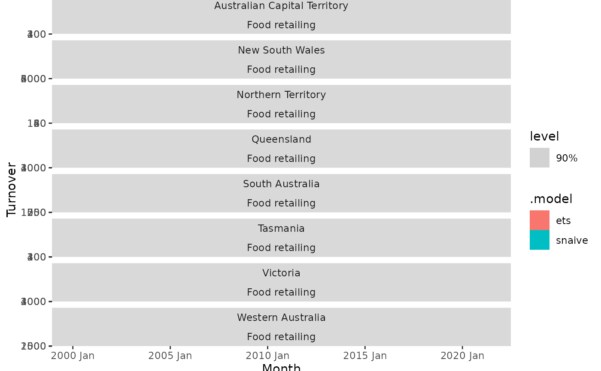
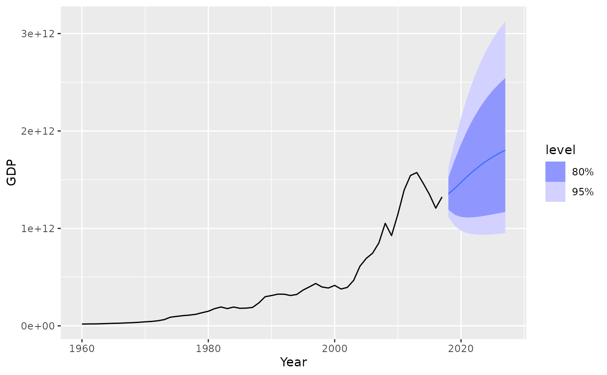

The forecast function allows you to produce future predictions of a time series
from fitted models. If the response variable has been transformed in the
model formula, the transformation will be automatically back-transformed
(and bias adjusted if bias_adjust is TRUE). More details about
transformations in the fable framework can be found in
vignette("transformations", package = "fable").
The time series model used to produce the forecasts
A tsibble containing future information used to forecast.
The forecast horison (can be used instead of new_data for regular
time series with no exogenous regressors).
The point forecast measure(s) which should be returned
in the resulting fable. Specified as a named list of functions which accept
a distribution and return a vector. To compute forecast medians, you can use
list(.median = median).
Additional arguments for forecast model methods.
Deprecated. Please use point_forecast to specify the
desired point forecast method.
Should forecasts be based on simulated future paths instead of analytical results.
Should innovations from simulated forecasts be bootstrapped from the model's fitted residuals. This allows the forecast distribution to have a different underlying shape which could better represent the nature of your data.
The number of future paths for simulations if simulate = TRUE.
A fable containing the following columns:
.model: The name of the model used to obtain the forecast. Taken from
the column names of models in the provided mable.
The forecast distribution. The name of this column will be the same as the
dependent variable in the model(s). If multiple dependent variables exist,
it will be named .distribution.
Point forecasts computed from the distribution using the functions in the
point_forecast argument.
All columns in new_data, excluding those whose names conflict with the
above.
The forecasts returned contain both point forecasts and their distribution.
A specific forecast interval can be extracted from the distribution using the
hilo() function, and multiple intervals can be obtained using report().
These intervals are stored in a single column using the hilo class, to
extract the numerical upper and lower bounds you can use unpack_hilo().
library(fable)
library(tsibble)
library(tsibbledata)
library(dplyr)
library(tidyr)
# Forecasting with an ETS(M,Ad,A) model to Australian beer production
beer_fc <- aus_production %>%
model(ets = ETS(log(Beer) ~ error("M") + trend("Ad") + season("A"))) %>%
forecast(h = "3 years")
# Compute 80% and 95% forecast intervals
beer_fc %>%
hilo(level = c(80, 95))
#> # A tsibble: 12 x 6 [1Q]
#> # Key: .model [1]
#> .model Quarter Beer .mean `80%`
#> <chr> <qtr> <dist> <dbl> <hilo>
#> 1 ets 2010 Q3 t(N(6, 0.0013)) 407. [388.3086, 425.8337]80
#> 2 ets 2010 Q4 t(N(6.2, 0.0014)) 483. [459.8714, 506.5468]80
#> 3 ets 2011 Q1 t(N(6, 0.0014)) 419. [398.6325, 439.3894]80
#> 4 ets 2011 Q2 t(N(6, 0.0015)) 384. [365.3574, 403.7254]80
#> 5 ets 2011 Q3 t(N(6, 0.0019)) 405. [382.4128, 427.7091]80
#> 6 ets 2011 Q4 t(N(6.2, 0.0022)) 481. [452.3059, 509.7606]80
#> 7 ets 2012 Q1 t(N(6, 0.0023)) 417. [391.5386, 443.0498]80
#> 8 ets 2012 Q2 t(N(5.9, 0.0025)) 383. [358.4021, 407.8355]80
#> 9 ets 2012 Q3 t(N(6, 0.0032)) 403. [374.7091, 432.7834]80
#> 10 ets 2012 Q4 t(N(6.2, 0.0036)) 479. [442.8408, 516.4800]80
#> 11 ets 2013 Q1 t(N(6, 0.0039)) 416. [383.0362, 449.4648]80
#> 12 ets 2013 Q2 t(N(5.9, 0.0043)) 382. [350.3968, 414.1880]80
#> # ℹ 1 more variable: `95%` <hilo>
beer_fc %>%
autoplot(aus_production)
# Forecasting with a seasonal naive and linear model to the monthly
# "Food retailing" turnover for each Australian state/territory.
library(dplyr)
aus_retail %>%
filter(Industry == "Food retailing") %>%
model(
snaive = SNAIVE(Turnover),
ets = TSLM(log(Turnover) ~ trend() + season()),
) %>%
forecast(h = "2 years 6 months") %>%
autoplot(filter(aus_retail, Month >= yearmonth("2000 Jan")), level = 90)

# Forecast GDP with a dynamic regression model on log(GDP) using population and
# an automatically chosen ARIMA error structure. Assume that population is fixed
# in the future.
aus_economy <- global_economy %>%
filter(Country == "Australia")
fit <- aus_economy %>%
model(lm = ARIMA(log(GDP) ~ Population))
#> Warning: 1 error encountered for lm
#> [1] The `urca` package must be installed to use this functionality. It can be installed with install.packages("urca")
future_aus <- new_data(aus_economy, n = 10) %>%
mutate(Population = last(aus_economy$Population))
fit %>%
forecast(new_data = future_aus) %>%
autoplot(aus_economy)
#> Warning: no non-missing arguments to max; returning -Inf
#> Warning: no non-missing arguments to max; returning -Inf
#> Warning: Removed 10 rows containing missing values or values outside the scale range
#> (`geom_line()`).
